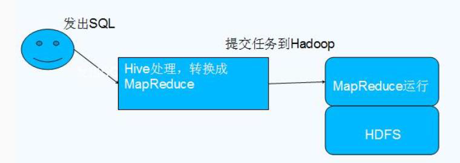

Hive 简介
数据仓库之父比尔·恩门（Bill Inmon）在 1991 年出版的“Building the Data Warehouse”（《建 立数据仓库》）一书中所提出的定义被广泛接受——数据仓库（Data Warehouse）是一个面 向主题的（Subject Oriented）、集成的（Integrated）、相对稳定的（Non-Volatile）、反映历史 变化（Time Variant）的数据集合，用于支持管理决策(Decision Making Support)。
Hive 依赖于 HDFS 存储数据，Hive 将 HQL 转换成 MapReduce 执行，所以说 Hive 是基于 Hadoop 的一个数据仓库工具，实质就是一款基于 HDFS 的 MapReduce 计算框架，对存储在 HDFS 中的数据进行分析和管理
Hive 架构

为什么使用 Hive
直接使用 MapReduce 所面临的问题：
1、人员学习成本太高
2、项目周期要求太短
3、MapReduce实现复杂查询逻辑开发难度太大
为什么要使用 Hive：
1、更友好的接口：操作接口采用类 SQL 的语法，提供快速开发的能力
2、更低的学习成本：避免了写 MapReduce，减少开发人员的学习成本
3、更好的扩展性：可自由扩展集群规模而无需重启服务，还支持用户自定义函数
Hive 特点
优点：
1、可扩展性,横向扩展，Hive 可以自由的扩展集群的规模，一般情况下不需要重启服务 横向扩展：通过分担压力的方式扩展集群的规模 纵向扩展：一台服务器cpu i7-6700k 4核心8线程，8核心16线程，内存64G => 128G
2、延展性，Hive 支持自定义函数，用户可以根据自己的需求来实现自己的函数
3、良好的容错性，可以保障即使有节点出现问题，SQL 语句仍可完成执行
缺点：
1、Hive 不支持记录级别的增删改操作，但是用户可以通过查询生成新表或者将查询结 果导入到文件中（当前选择的 hive-2.3.2 的版本支持记录级别的插入操作）
2、Hive 的查询延时很严重，因为 MapReduce Job 的启动过程消耗很长时间，所以不能 用在交互查询系统中。
3、Hive 不支持事务（因为不没有增删改，所以主要用来做 OLAP（联机分析处理），而 不是 OLTP（联机事务处理），这就是数据处理的两大级别）。
总结：

Hive 具有 SQL 数据库的外表，但应用场景完全不同。
Hive适合用来做海量离线数据统计分析，也就是数据仓库。